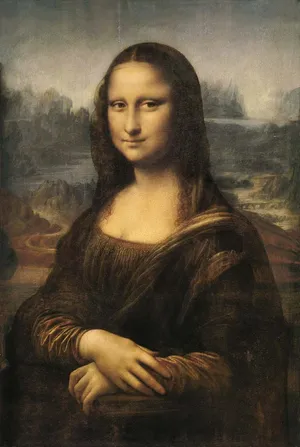

Artwork By Artist
1. Mona Lisa – Leonardo da Vinci

The painting presents a woman in half-body portrait, which has as a backdrop a distant landscape. Yet this simple description of a seemingly standard composition gives little sense of Leonardo’s achievement. The three-quarter view, in which the sitter’s position mostly turns toward the viewer, broke from the standard profile pose used in Italian art and quickly became the convention for all portraits, one used well into the 21st century. The subject’s softly sculptural face shows Leonardo’s skillful handling of sfumato (use of fine shading) and reveals his understanding of the musculature and the skull beneath the skin. The delicately painted veil, the finely wrought tresses, and the careful rendering of folded fabric demonstrate Leonardo’s studied observations and inexhaustible patience. Moreover, the sensuous curves of the sitter’s hair and clothing are echoed in the shapes of the valleys and rivers behind her. The sense of overall harmony achieved in the painting—especially apparent in the sitter’s faint smile—reflects Leonardo’s idea of the cosmic link connecting humanity and nature, making this painting an enduring record of Leonardo’s vision. In its exquisite synthesis of sitter and landscape, the Mona Lisa set the standard for all future portraits.
2. The Starry Night– Vincent van Gogh
The Starry Night is an oil painting created by the Dutch post-impressionist artist Vincent van Gogh in 1889. The painting depicts the view from Van Gogh’s asylum room in Saint-Paul-de-Mausole, where he was undergoing treatment for mental illness.
The painting shows a stylized landscape with a small village, cypress trees, and a swirling sky filled with stars and vibrant colors. The work is known for its distinctive style, which combines elements of impressionism and expressionism to create a unique, dream-like vision of the world.
The Starry Night is considered one of Van Gogh’s greatest works and has become an icon of Western art.
It has been widely reproduced and imitated in popular culture and is recognized as a symbol of the power of artistic expression to convey intense emotions and psychological states. It is currently housed in the Museum of Modern Art in New York City.
3. Girl with a Pearl Earring
Girl with a Pearl Earring is a 17th-century painting created by the Dutch artist Johannes Vermeer. The painting depicts a young woman wearing a headscarf and a large pearl earring, looking over her shoulder at the viewer. The painting is famous for its use of light and shadow, and the enigmatic expression of the sitter.
The identity of the sitter is unknown, and the painting has been interpreted in different ways, from a simple portrait to a symbol of feminine beauty and mystery. The painting has been widely reproduced and is considered one of Vermeer’s most famous works.
Girl with a Pearl Earring is currently housed at the Mauritshuis museum in The Hague, Netherlands, and is regarded as a masterpiece of Dutch Golden Age painting.
The painting has been the subject of numerous adaptations, including a popular novel and a film, and its enduring popularity has made it one of the most recognizable and celebrated works of art in the world.
Comparing Art
| Aspect |
Mona Lisa |
The Starry Night |
Girl with a Pearl Earring |
| Artist |
Leonardo da Vinci |
Vincent van Gogh |
Johannes Vermeer |
| Year |
1503-1506 |
1889 |
1665 |
| Medium |
Oil on poplar panel |
Oil on canvas |
Oil on canvas |
| Location |
Louvre Museum, Paris |
Museum of Modern Art, New York City |
Mauritshuis, The Hague |
To make your own art
Here Are following steps :
1.Get Inspired
Look around you — nature, photos, other artworks, emotions, or ideas.
Think about what you want to express or explore.
2.Choose Your Medium
Decide what materials you want to use: pencils, paints (acrylic, oil, watercolor), markers, digital tools, etc.
3.Gather Your Supplies Collect the tools you need
- paper/canvas
- brushes
- paints
4.Start Creating
Begin with a light sketch if needed.
Block in main shapes or colors.
For More Info